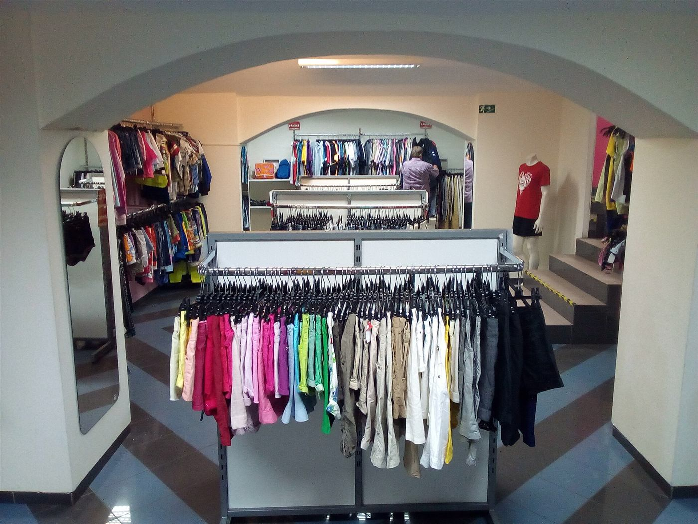
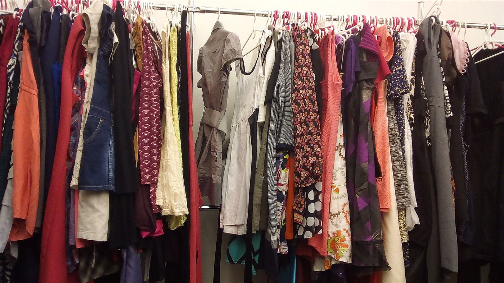

Who are the
thrifters?
Demographic, psychographic, behavioural and geographic: four ways to read Malaysia's thrift shoppers.
Chapter 01 / 04The profile
Who
Starting with the demographics, younger generations like Generation Z and Millennials who embrace sustainable and previously owned items into their daily life highly support the second-hand market (Solomon & Russell, 2024; Consumer Collective, 2026). Even when people's beliefs before the modern days see thrifting only as financial limitations, it has actually become more popular these days among middle-class and upper-class consumers because of their search for unique vintage items, need for individuality, and status signals (Halicki et al., 2024). Plus, research done has shown that there is a strong relationship between this demographic with a higher level of education, which raises consumer awareness further about the serious waste and environmental harm that is caused by the fast-fashion industry (Mobarak et al., 2025).
What they value
Moving on to psychographics, people who shop second-hand are really motivated by having a deep care for our planet, being against overconsumption, and a sense of responsibility to reduce waste (Halicki et al., 2024). These key motives are separated into two types: First would be utilitarian benefits, which are shoppers who prioritizes saving costs and affordability, whereas the other would be hedonic rewards, which are shoppers that love the excitement of treasure hunting (Morgan & Townsend, 2022). Based on self-concept theory, these consumers reject mass-produced and generic fashion trends by owning unique, pre-owned, or vintage products to create their own individual identity.
How they shop
Based on behaviour, modern thrift shoppers are very tech-savvy, where they depend a lot on omnichannel research by browsing through online marketplaces and social commerce platforms before making purchases. They show higher brand loyalty towards resale platforms, curated styles, and sustainable retail communities instead of fast-fashion retail stores (DHL, 2024).
Where
Geographic plays a big role too, as most of the thrifting activity happens in cities and suburbs where thrift stores, vintage boutiques, and reliable delivery services are easier to access (Marcus, 2022). In Malaysia, thrifting culture is trendy around university campuses and city centers, meanwhile second-hand apps break the barriers so shoppers from outside the city can shop as well (DHL, 2022).

Photo: MAKY.OREL, CC BY-SA 4.0, Wikimedia Commons
Photo: MAKY.OREL, CC BY-SA 4.0, Wikimedia CommonsThe resource-conscious thrifter
Gen Z & Millennials, educated, digitally active- Lives
- Cities, suburbs & around campuses
- Shops at
- Thrift stores, vintage boutiques, resale apps
- Motivated by
- Care for the planet, saving money, the treasure hunt
- Wants
- Unique pieces that show who they are
- Content
- 100% preloved